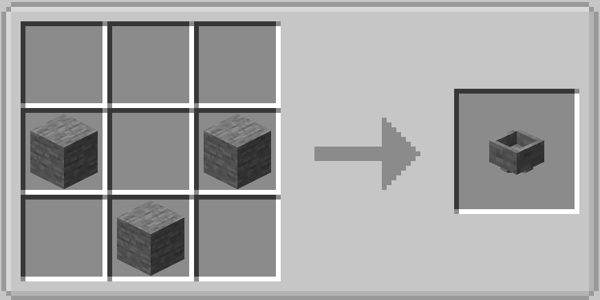
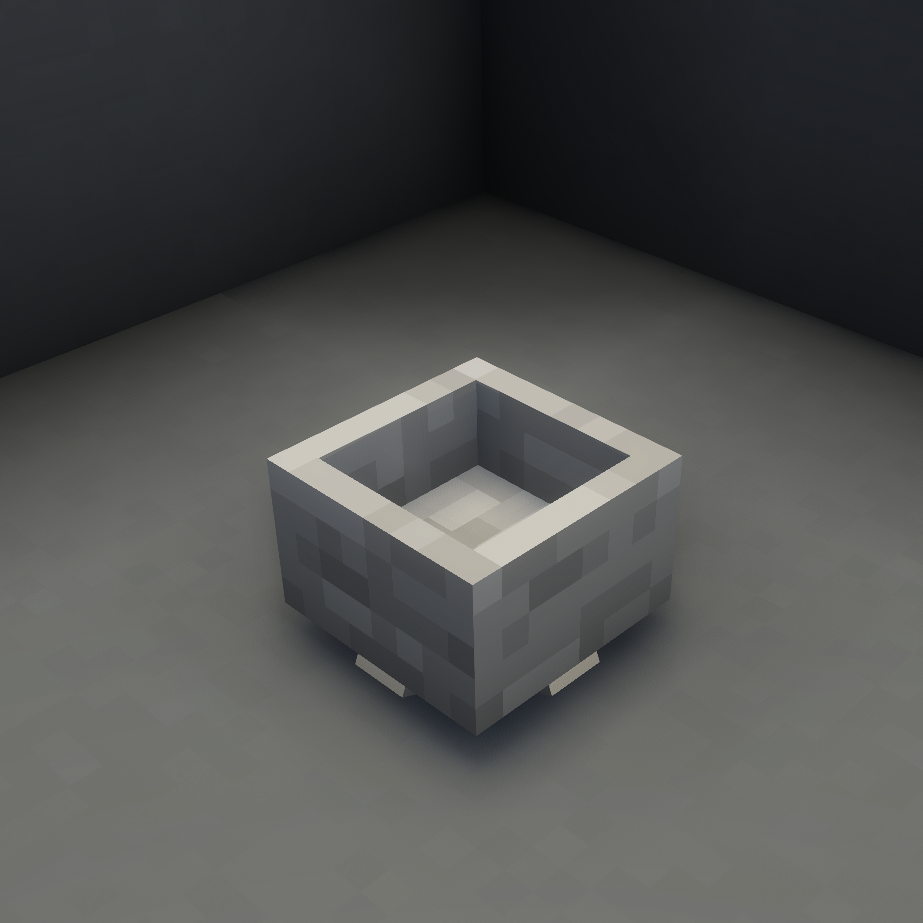
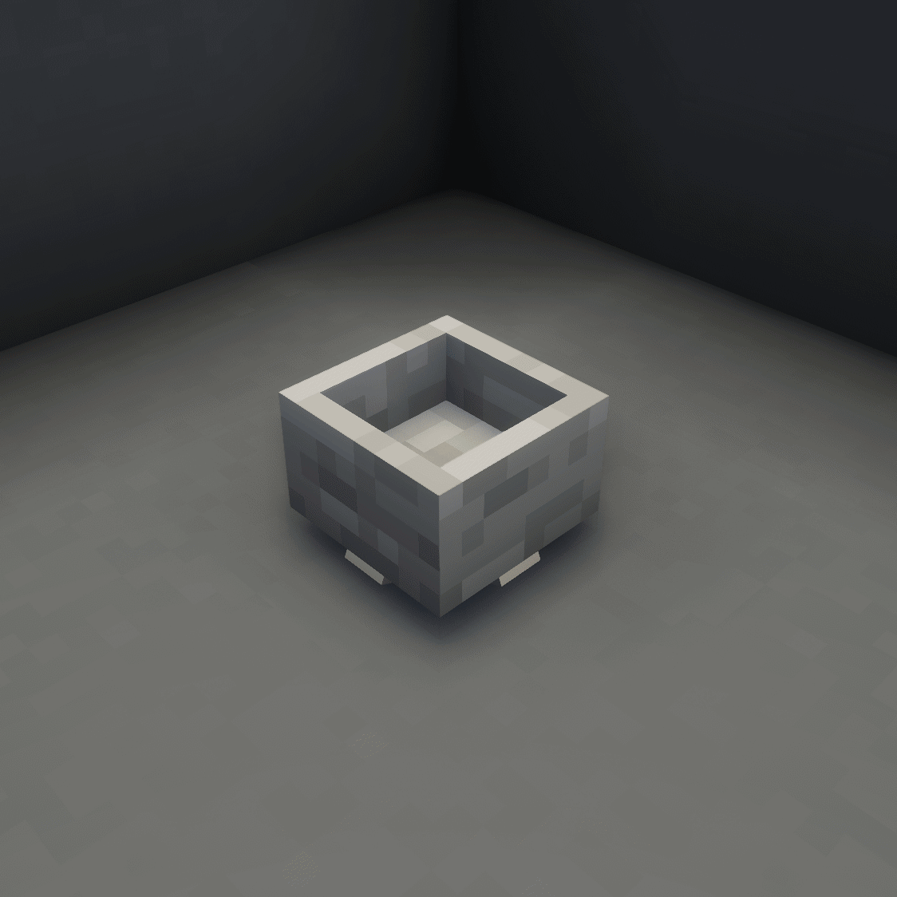
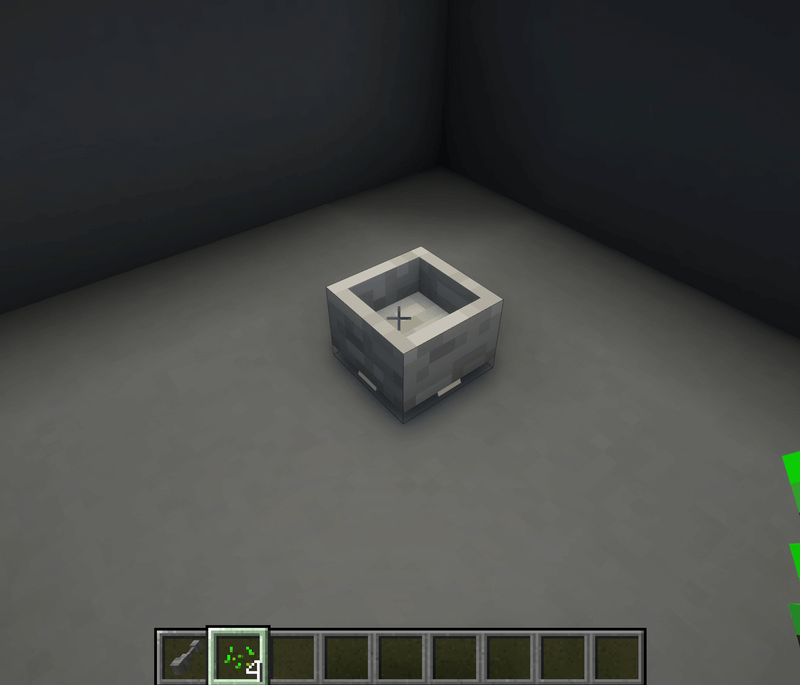

Used to crush ingredients to get at the goodness inside - your first step towards bread made without straw! Will require its trusty partner, the Pestle.
The Mortar holds up to 4 items. Right click to put items in the mortar, and right click again with an empty hand to remove them. Hold right click with a pestle to grind. An Offset Spatula can be used to change its cosmetic appearance.
Some items, when ground in the Mortar, produce liquid. To collect it, use a bottle, jar, or bucket. Bottles hold 250mB only, buckets hold 1000mB only, and jars hold everything in between. Liquid must be collected before grinding other things, or the other grindings won't work.

1.0


